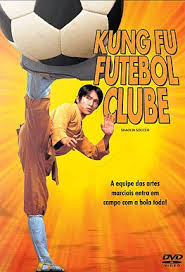

|  | Kung-Fu Futebol Clube
Direção: Stephen Chow
Roteiro Stephen Chow, Kan-Cheung Tsang
Elenco: Stephen Chow, Wei Zhao, Karen Mok
Sing (Stephen Chow) é um devoto do kung fu Shaolin que possui um poderoso chute. Após ser descoberto por um técnico de futebol, Sing entra em um time formado por mestres do kung fu. O objetivo é ganhar um atraente prêmio em dinheiro oferecido por um campeonato local de futebol. A mistura entre futebol e artes marciais faz sucesso e eles conseguem chegar até a final da competição, na qual precisarão enfrentar o temido Team Evil. |
|
Acesse mais em YouTube SESSÕES
|